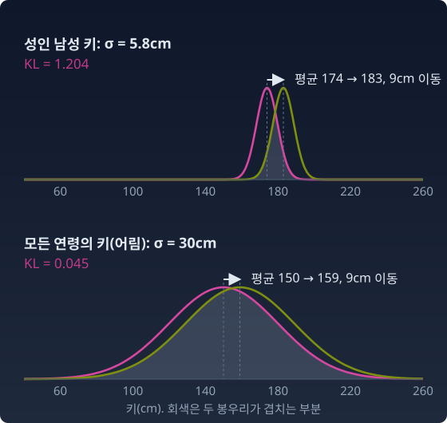
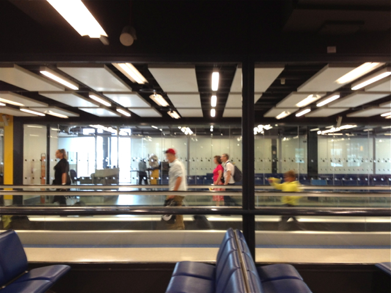

거리
분포는 점이 될 수 있다. 한국 남성 (174, 5.8)과 네덜란드 남성 (183, 7.1). (μ, σ) 평면 위의 두 점이다.
점을 찍은 이유는 하나다. 거리를 재기 위해서다.
거리를 잴 수 있으면, 비로소 진짜 질문을 할 수 있다. 내 모델이 현실에서 얼마나 멀리 떨어져 있는가? 한 에폭(학습 데이터 전체를 한 번 훑는 단위) 학습한 뒤에 그 거리가 줄어들었는가, 늘어났는가? 내 모델과 너의 모델 중 어느 쪽이 현실에 더 가까운가? 학습률을 이만큼 높여도 괜찮은가, 아니면 손실이 끝없이 커지고 있는가?
기계학습의 거의 모든 판단이 "거리"에 의존한다.
가장 먼저 떠오르는 자는 유클리드 거리다. (μ, σ) 평면 위의 두 점이니까, 피타고라스 정리로 재면 되지 않을까?
한국 남성과 네덜란드 남성 사이는 √(9² + 1.3²) ≈ 9.1이다.
그런데 이 숫자가 두 분포의 "다름"을 제대로 재고 있을까?
같은 9cm를 다른 곳에서 움직여 보자. 성인 남성의 키 분포는 σ가 5.8cm쯤이다. 평균을 174에서 183으로 옮기면 봉우리가 자기 폭의 1.5배를 이동한다. 두 분포는 겹치는 부분보다 어긋나는 부분이 더 많아진다.
이번에는 아이부터 노인까지 모든 연령의 키를 모은 분포를 생각한다. 나이마다 키가 달라 실제 모양은 종 하나가 아니지만, 여기서는 퍼진 정도만 보려고 평균 150cm쯤, σ 30cm쯤인 넓은 종으로 어림한다. 여기서 평균을 9cm 옮기면, 넓게 퍼진 언덕이 제 폭의 3분의 1도 안 되게 조금 밀려날 뿐이다. 두 분포는 거의 포개진다.

유클리드 자는 두 경우 모두 9라고 말한다. 하지만 분포의 관점에서 앞의 것은 큰 변화이고 뒤의 것은 작은 변화다. 같은 9cm라도 σ가 얼마인지에 따라 뜻이 달라지는데, 유클리드 자는 μ의 차이와 σ의 차이를 좌표 그대로 더할 뿐 이 맥락을 모른다.
이 장 뒤에서 만날 KL 발산(「케이엘 발산」이라 읽는다. KL은 K와 L의 곱이 아니라 이 양을 정리한 두 사람, 쿨백(Solomon Kullback)과 라이블러(Richard Leibler)의 이름 머리글자다)이라는 자로 재면 앞의 이동은 1.20, 뒤의 이동은 0.045다. 약 27배 차이다.
확률분포의 공간에서 유클리드 거리가 통했다면, 정보기하학이라는 학문은 필요하지 않았을 것이다. 다른 자가 필요하다.
방향이 있는 자: 가는 길과 오는 길이 다르다
다른 자를 고르기 전에 먼저 물어야 할 것이 있다. 우리가 무엇을 "거리"라고 부를 때 당연하게 기대하는 성질은 무엇이고, 새 자는 그것을 모두 지켜야 할까?
거리의 네 약속 — 대칭은 당연한가
수학이 "거리"라고 부르는 것은 네 가지 약속을 지키는 함수다.
이 가운데 셋째 약속, 대칭은 너무 당연해 보여서 따로 의심해 본 적이 드물다. 서울에서 부산까지와 부산에서 서울까지는 같은 거리라는 것. 이 절에서 의심하는 것이 바로 이 대칭이다.
무빙워크: 걸린 시간으로 재면
왕복이 다른 길을 걸어 본 적이 있는가? 공항 무빙워크가 그렇다. 무빙워크를 타고 가면 3분 걸리는 복도를 거슬러 걸어오면 11분이 걸린다. 같은 두 지점인데 방향에 따라 "걸리는 시간"이 다르다. 복도 곳곳에 지점을 찍고 서로 간의 시간을 표로 만들면, 그 표는 대각선을 기준으로 접었을 때 포개지지 않는다.
비대칭은 공간이 휘어서 생기는 것이 아니다. 복도는 곧고 평평하다. 달라진 것은 재는 방식이다. 걸음 수 대신 걸린 시간으로 재기로 했고, 그 재는 방식 안에 방향이 들어 있다.

파이썬
import numpy as np
pos = np.array([0, 100, 300]) # 복도 위 세 지점 A, B, C (m)
walk, belt = 1.0, 0.55 # 걷는 속도, 무빙워크 속도 (m/s), 무빙워크는 + 방향
gap = pos[None, :] - pos[:, None] # gap[i, j] = j 위치 - i 위치
speed = np.where(gap > 0, walk + belt, walk - belt)
T = np.abs(gap) / speed / 60 # 걸리는 시간 (분)
print(np.round(T, 1))
print("대칭인가?", np.allclose(T, T.T))
# [[ 0. 1.1 3.2]
# [ 3.7 0. 2.2]
# [11.1 7.4 0. ]]
# 대칭인가? False
수확
"비대칭 거리"는 이상한 게 아니라 방향이 있는 자다. 재는 방식 안에 방향이 들어 있으면, 가는 값과 오는 값이 달라진다.
문제 1. 무빙워크 표로 네 약속 점검하기
위 파이썬의 복도(세 지점 A, B, C는 0m, 100m, 300m, 걷는 속도 1.0 m/s, 무빙워크 0.55 m/s)에서 걸린 시간을 하나의 "자"로 쓴다. (가) 대칭은 깨졌다. 나머지 세 약속, 특히 삼각부등식은 지키는가? A → C와 A → B → C, C → A와 C → B → A를 견주어라. (나) 무빙워크 속도를 걷는 속도보다 빠른 1.2 m/s로 바꾸면 표는 어떻게 되는가?
함께 풀기

(가)는 표에서 바로 읽었어요. A → C가 3.23분이고 A → B → C가 1.08 + 2.15 = 3.23분이에요. C → A는 11.11분, C → B → A도 7.41 + 3.70 = 11.11분이고요. 둘 다 딱 같아요.

같으면 삼각부등식이 깨진 거예요, 지켜진 거예요?

지켜진 거예요. 부등식이 ≤라서 같아도 돼요. B가 A와 C 사이에 있으니까 B를 들르는 길이 곧장 가는 길과 같을 수밖에 없고요. B를 지나쳤다가 돌아오면 길어지기만 해요. A → B는 1.08분인데 A → C → B로 돌면 3.23 + 7.41 = 10.63분이에요.
나머지 두 약속은요?
걸린 시간은 음수가 아니고, 0분이면 같은 자리예요. 네 약속 가운데 대칭 하나만 빠졌어요.
(나)는 코드에서 belt만 1.2로 바꿨어요. 그런데 C에서 A까지가 −25분이 나와요. 거슬러 걸으면 시간이 거꾸로 가나요?
걷는 속도에서 무빙워크 속도를 빼면 얼마예요?

1.0 − 1.2 = −0.2 m/s요. 아, 열심히 걸어도 뒤로 밀려나는 거네요. 코드는 음수 속도로 나눴을 뿐이고, 실제로는 C에서 A로 영영 못 가요.
그럼 그 칸에 들어갈 값은 −25가 아니라 끝이 없는 값이에요. 무빙워크 속도를 1.0에 가깝게 올려 가면 거슬러 가는 시간이 한없이 커지다가, 1.0을 넘는 순간 아예 갈 수 없게 돼요. 그런데 반대쪽 A → C는 2.27분으로 멀쩡해요.
그래요. 한쪽 방향이 끝없이 커져도 다른 쪽은 멀쩡할 수 있다는 것, 방향이 있는 자에서만 생기는 일이에요.
제가 조교님께 메일을 보내면 하루 만에 답이 오는데, 조교님이 제 옛 학교 메일로 보내면 영영 안 닿는 거랑 같네요. 한쪽 길만 끊겨 있어요.